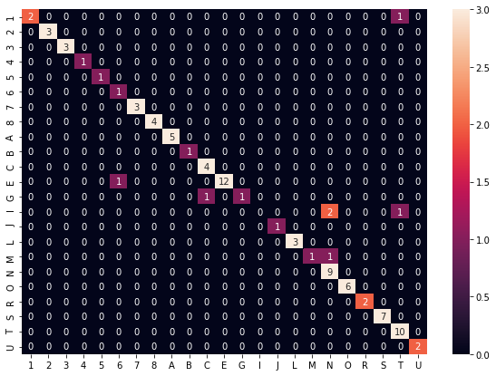

EDA revealed the distinct characterizing of letters by polar angle of their segments; use SVC to create a model to predict letters
import glob
from PIL import Image
from scipy import ndimage
import numpy as np
import math
import pandas as pd
import pickle
from sklearn import svm
from sklearn.model_selection import train_test_split
def cart2pol_sorted_y(vertices):
'''Convert the cartesian coordinates (vertices) to polar angles (phi).
This method assumes that the vertices are sorted on the Y-axis'''
x_min = vertices[:, 0].min()
y_min = vertices[:, 1][0]
x_max = vertices[:, 0].max()
y_max = vertices[:, 1][-1]
x_avg = (x_min + x_max) / 2
y_avg = (y_min + y_max) / 2
# recenter the centroids
vertices = [[i[0] - x_avg, i[1] - y_avg] for i in vertices]
# calculate angle as degrees +/-180
phi = [math.degrees(np.arctan2(i[1], i[0])) for i in vertices]
return np.sort(np.array(phi))
This version of get_vertices is almost identifcal to the function used during EDA, but has the aspect ratio and coordinate scaling calculations removed as they hindered the performance of SVC.
def get_vertices(vertices, image, letter, start, path='./data/captures/'):
'''
Create a dictionary that stores the centroid and angle for each segment within an letter for
each image. The key is (letter, image) and the attributes are:
- numpy shape of the letter (x, y)
- starting point (y) of the shape within the overall graphic (for reference)
- the vertices (x,y) of each segment centroid that defines a letter; usually between 3 and 9
vertices per letter
- the polar angle of the segment centroid relative to a centered letter
Args:
- vertices, list of vertexes [[x1,y1], [x2, y2],... [xN, yN]]
- image, a graphic image represented as a numpy array
- letter, single character
- start, numer representing the starting position (y coordinate) of the letter within the image
(for reference only)
- path, file path to image
Returns:
- dictionary of vertices and metadata
'''
filename = path + image + '/' + letter + '_' + start + '.png'
img = Image.open(filename)
# convert the PIL image to an numpy array
face = np.array(img)
# invert the image for labeling
face_not = np.logical_not(face)
# label each of the adjacent pixels, creating segments
label_im, nb_labels = ndimage.label(face_not)
# determine the centroid of each segment
c_o_m = ndimage.measurements.center_of_mass(label_im, label_im, range(1, nb_labels + 1))
com_stack = np.stack(c_o_m)
# sort the array by the second column (phi)
sorted_com = com_stack[com_stack[:,1].argsort()]
# calculate the angle
phi = cart2pol_sorted_y(sorted_com)
# create or update the dictionary entry
if (letter, image) in vertices:
vertices[(letter, image)]['shape'].append(face.shape)
vertices[(letter, image)]['start'].append(int(start))
vertices[(letter, image)]['vertices'].append(c_o_m)
vertices[(letter, image)]['phi'].append(phi)
else:
vertices[(letter, image)] = {
'shape': [face.shape],
'start': [int(start)],
'vertices': [c_o_m],
'phi': [phi]
}
return vertices
vertices = dict()
# only process training images that were relatively clean
images = [1,2,3,4,5,6,7,9,10,11,12,13,14,15,16,17,18,19,20] # leave out images 8, 21 and 22
for image in images:
# make the number into a string
image = str(image)
for filename in glob.glob('./data/captures/' + image + '/?_*.png'):
# loop though all the images (directories) and letters (files)
start = filename[filename.rfind('_')+1:-4]
letter = filename[filename.rfind('/')+1]
# get the vertices (the method will assemble the parameters into a path and filename)
vertices = get_vertices(vertices, image, letter, start)
with open("./data/output/02_vertices.pickle", "wb") as output_file:
pickle.dump(vertices, output_file)
flattened_phi = []
letters = vertices.keys()
for letter in letters:
for i in range(len(vertices[letter]['start'])):
for phi in vertices[letter]['phi'][i]:
flat_phi = [letter[0]] + [letter[1]] + [vertices[letter]['start'][i]] + [phi]
flattened_phi.append(flat_phi)
# add some descriptive column names
columns = ['Letter', 'Image', 'Start', 'phi']
df_pk_phi = pd.DataFrame(flattened_phi, columns=columns)
# The data looked like:
df_pk_phi.query("Letter == '0' & Image == '10' & Start == '205'")
| Letter | Image | Start | phi | |
|---|---|---|---|---|
| 756 | 0 | 10 | 205 | -179.738910 |
| 757 | 0 | 10 | 205 | -91.270565 |
| 758 | 0 | 10 | 205 | -0.072804 |
| 759 | 0 | 10 | 205 | 91.270565 |
# Using the dense rank method to create columns names during pivoting
df_pk_phi['rank_count'] = df_pk_phi.groupby(['Letter', 'Image', 'Start'])['phi'].rank(method='dense', ascending=True)
df_pk_phi_pivot = pd.pivot_table(df_pk_phi, values='phi', index=['Letter', 'Image', 'Start'], columns='rank_count')
df_pk_phi_pivot.columns = ['s1', 's2', 's3', 's4', 's5', 's6', 's7', 's8', 's9']
# And in its pivoted form, looks like:
df_pk_phi_pivot.query("Letter == '0' & Image == '10' & Start == '205'")
| s1 | s2 | s3 | s4 | s5 | s6 | s7 | s8 | s9 | |||
|---|---|---|---|---|---|---|---|---|---|---|---|
| Letter | Image | Start | |||||||||
| 0 | 10 | 205 | -179.73891 | -91.270565 | -0.072804 | 91.270565 | NaN | NaN | NaN | NaN | NaN |
Note how the angles are explicitly sorted ascending from left to right, 's1' to 's9' (if present)
# save the df to an excel file for review
df_pk_phi_pivot.to_excel('df_pk_phi_pivot.xlsx', merge_cells=False)
# load the edited excel sheet: specifically the 'Output' sheet
df_pk_phi_pivot = pd.read_excel('./data/output/02_df_pk_phi_pivot_output.xlsx', sheet_name='Output')
# save clean data
# I added a checkbox column 'Invalid' to identify bad data
df_valid = df_pk_phi_pivot.query('Invalid == False')
# create labels as a numpy array
y = df_valid[['Letter']].to_numpy()
# create features, don't include 's8' or 's9' as they were insignificant
X = df_valid[['s1','s2','s3','s4','s5','s6','s7']].to_numpy()
X = np.nan_to_num(X)
# Train/Test Split.
X_train, X_test, y_train, y_test = train_test_split(X,
y,
test_size=0.33,
random_state=2019,
stratify=y)
# Instantiate support vector machine.
svc = svm.SVC()
# Fit support vector machine to training data.
svc.fit(X_train, y_train.ravel())
# Generate predictions.
y_pred = svc.predict(X_test)
# Measure performance based on accuracy.
from sklearn.metrics import accuracy_score
accuracy_score(y_test, y_pred.ravel())
/Users/ianmosley/anaconda3/lib/python3.6/site-packages/sklearn/svm/base.py:196: FutureWarning: The default value of gamma will change from 'auto' to 'scale' in version 0.22 to account better for unscaled features. Set gamma explicitly to 'auto' or 'scale' to avoid this warning.
"avoid this warning.", FutureWarning)
0.33707865168539325
svc = svm.SVC(C = 10,
kernel = 'rbf',
gamma = 'scale',
probability = True
)
# Fit on training data.
svc.fit(X_train, y_train.ravel())
# Evaluate model.
accuracy_score(y_test, svc.predict(X_test))
0.9213483146067416
with open('./model/02_SegmentPolarSVC_clean.pickle', 'wb') as handle:
pickle.dump(svc, handle)
test_df = pd.DataFrame(X_test)
test_df['actual'] = y_test
test_df['predicted'] = svc.predict(X_test)
# look at a specific letter
letter = 'C'
test_df.query("actual==@letter or predicted==@letter")
| 0 | 1 | 2 | 3 | 4 | 5 | 6 | actual | predicted | |
|---|---|---|---|---|---|---|---|---|---|
| 47 | -142.658613 | -37.176651 | 32.472729 | 147.527271 | 0.0 | 0.0 | 0.0 | C | C |
| 55 | -140.070155 | -35.485855 | 35.734897 | 146.718353 | 0.0 | 0.0 | 0.0 | G | C |
| 59 | -143.350785 | -38.397763 | 32.458050 | 147.390449 | 0.0 | 0.0 | 0.0 | C | C |
| 60 | -144.067077 | -40.578483 | 32.007376 | 147.284180 | 0.0 | 0.0 | 0.0 | C | C |
| 84 | -137.519736 | -34.152484 | 34.480238 | 149.547195 | 0.0 | 0.0 | 0.0 | C | C |
Looking at the segment angles, 'G' and 'C' are very similar. More training data would likely help.
from sklearn.metrics import confusion_matrix
import matplotlib.pyplot as plt
import seaborn as sn
confusion = confusion_matrix(test_df['actual'], test_df['predicted'])
unique_labels = sorted(test_df['actual'].unique())
df_cm = pd.DataFrame(confusion, index=unique_labels,
columns=unique_labels)
plt.figure(figsize = (10,7))
sn.heatmap(df_cm, annot=True, vmax=3)
<matplotlib.axes._subplots.AxesSubplot at 0x1a17639fd0>

Yes, very low counts, as always, need more training data.
from IPython.display import clear_output
Loop through each letter and make observations
notes = []
for letter in test_df['actual'].unique():
clear_output()
display(test_df.query("actual==@letter")) # and predicted==@letter"))
note = input()
notes.append([letter, note])
display(notes)